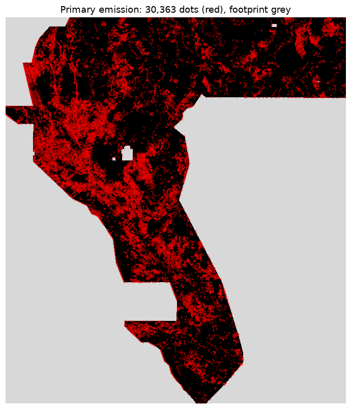
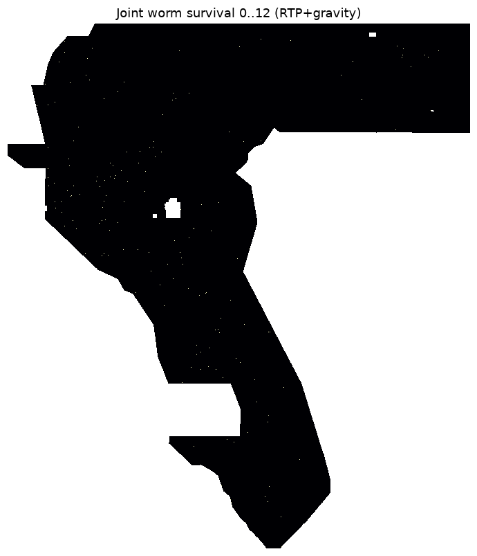
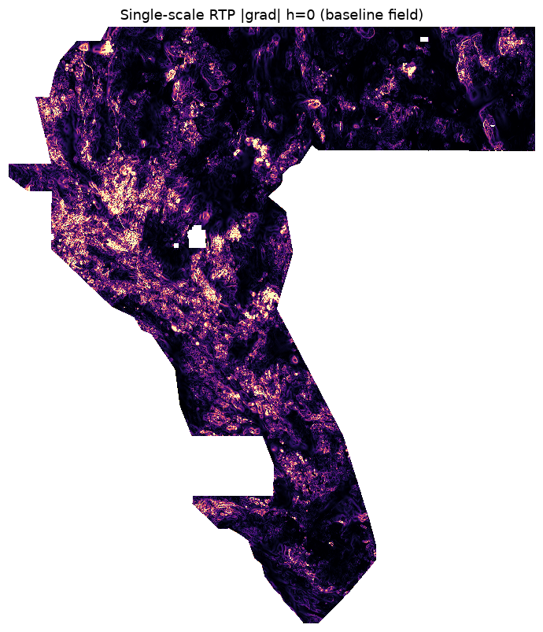

DOE GEMS Prize (DrivenData #306): find geothermal-indicative faults not in the USGS/INGENIOUS catalogue. A candidate must survive two independent notions of scale — upward-continuation worming and topological persistence — on the magnetic (RTP) and gravity layers.
Core values: Maximize P(Win) · Own the Outcome. Every claim carries an evidence class. No organiser score exists for any file here — the candidate is UNSCIRED.
Download primary .tif (zeros, 181 KB) .zip (single GeoTIFF inside)
Also: NaN-outside twin (competition convention) · format receipt (independent re-read)
Filename: gemsdoe42-h42-1-wormpersist-20261005T230000Z-d1db2d77-zeros.tif
Unique submission name: GEMSDOE42-H42-1-WORMPERSIST
Note to paste (126/200 chars):
GEMSDOE42 H42-1 worming x persistence | 30363 dots off-catalogue, RTP+gravity worms x topo persistence; sha 5d4913b0; UNSCORED
single band · float32 · EPSG:32611 · 100 m · 3730×3292 · 30,363 dots · 0 on-catalogue · every cell finite in [0,1] · 0 NaN · nodata=None · sha256 5d4913b07464f15b… · rebuild-verified bit-identical
-3.4e38 written through (3,061 such cells sit inside the footprint); (2) a NaN nodata tag on a strict validator. This primary is all-finite with nodata=None: all 12,279,160 cells satisfy 0 ≤ v ≤ 1 with zero NaNs — verified by re-reading the written bytes (12-point audit).Per-pixel persistence score = (worm continuation steps survived, 0–12) × (topological birth–death steps, 0–12), summed over the RTP magnetic and isostatic-gravity layers, normalised to [0,1], catalogue-masked, thinned to 30,363 dots at 2.8 px spacing. Zero labels are used anywhere in the detector, so the holdout cannot leak.

Primary: 30,363 dots (red) on the footprint.
Continuous persistence score [0,1] — sparse by construction.

Joint worm survival 0–12 (RTP + gravity).

Single-scale RTP |gradient| — the diffuse baseline we beat.
| number | value | class | meaning |
|---|---|---|---|
| public leader | 0.3262 (nchuzhoy) | verified 2026-10-05 | official leaderboard read |
| group best (owner claim) | 0.2778 (H33-2-B2) | claim | submission-screen report, no organiser receipt |
| this candidate | UNSCIRED | model | holdout PASS licenses the slot, never a score claim |
| uniqueness | r ≤ 0.0053, J ≤ 0.0061 | measured here | vs 24 prior raw outputs, this checkout |
| holdout contrast | +0.0125, 4/4 folds | measured here | PRIMARY SGMC off-catalogue, matched mass |
bash scripts/restore_data.sh /home/user/pyenv42/bin/python scripts/build_submission.py --budget 40000 /home/user/pyenv42/bin/python scripts/validate_holdout.py /home/user/pyenv42/bin/python -m pytest tests/ -q
CPU-only, measured: ~53 s cold / ~19 s warm; holdout ~63 s; tests ~2 s. Rebuild is bit-identical (sha256 pinned).